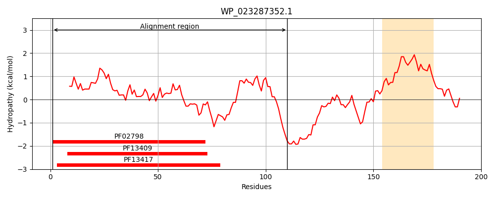
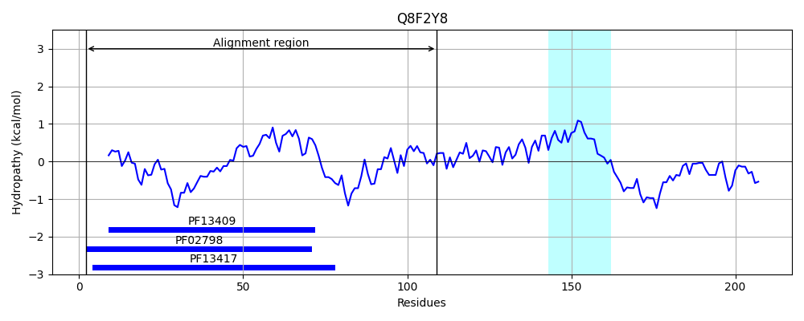
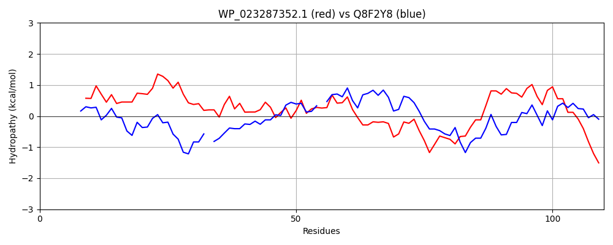

Hit Accession: Q8F2Y8
Hit TCID: 1.A.12.2.2
Hit Description: gnl|BL_ORD_ID|16131 gnl|TC-DB|Q8F2Y8|1.A.12.2.2 Glutathione transferase OS=Leptospira interrogans serogroup Icterohaemorrhagiae serovar Lai (strain 56601) GN=gst PE=1 SV=1
Mach Len: 110
e:0.000004
Query TMS Count : 1
Hit TMS Count: 1
TMS-Overlap Score: 0.400000
Predicted Substrates:CHEBI:3731;chloride
BLAST Alignment:
| Protein Hydropathy Plots: | |
|---|---|
|  |  |
Pairwise Alignment-Hydropathy Plot: | |
|  | |